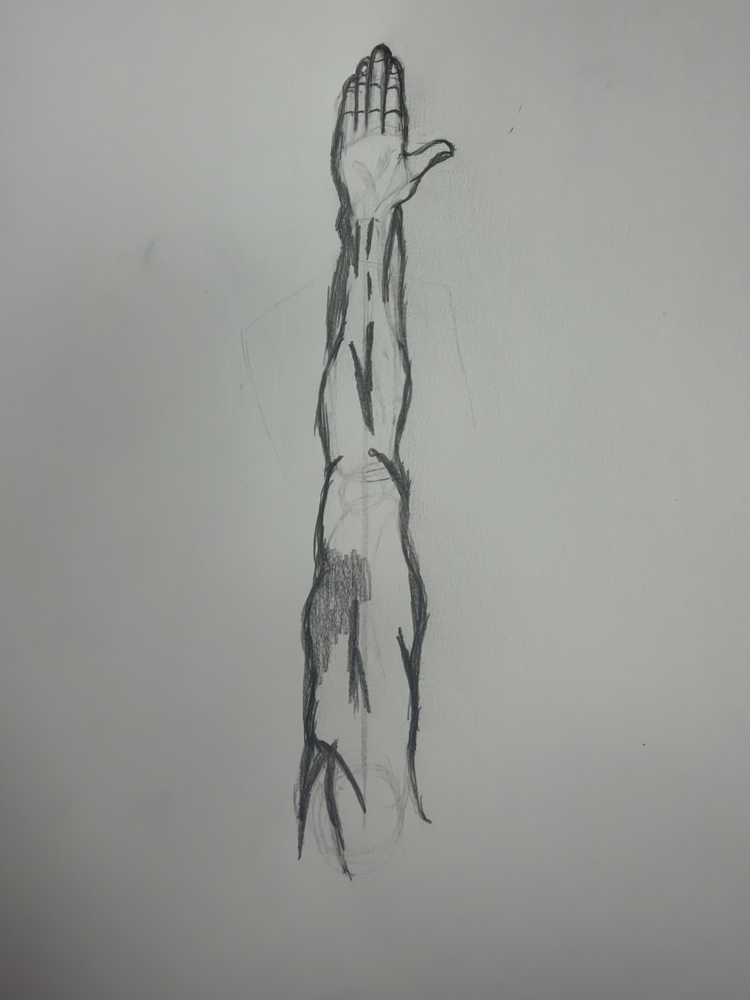

After getting rid of the framework, you can now add the finer details. add the muscles, shadows, and the specific details as you please. A good suggestion would be to look at human anatomy to get a good understanding of the human muscle so that you can add the finsihed look. Gaze at your beautifully drawn arm and be proud.
Previous Finish